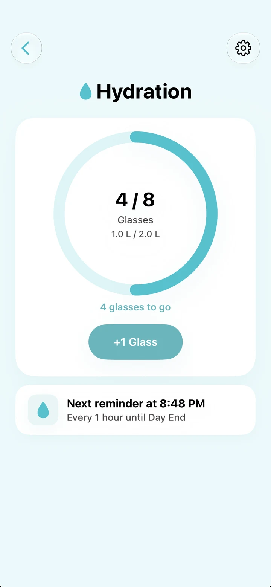
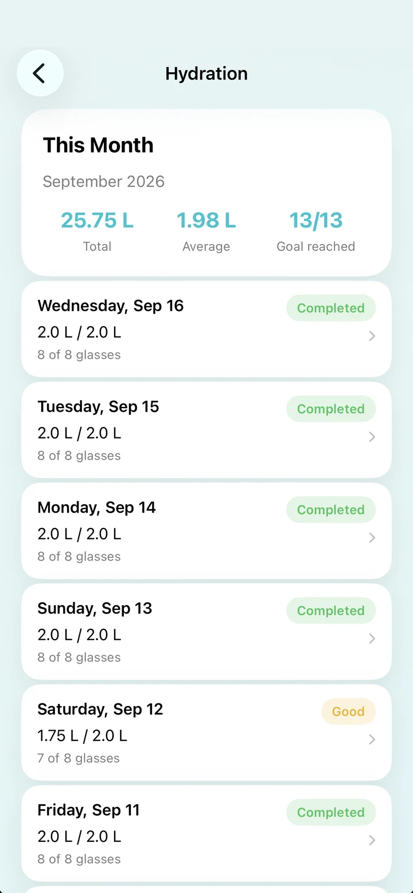

Hydration
Stay hydrated throughout your day.
Track your daily water intake, set a personal goal, and get gentle reminders to drink water.
- Track your daily water intake
- Set your own hydration goal
- Get gentle water reminders